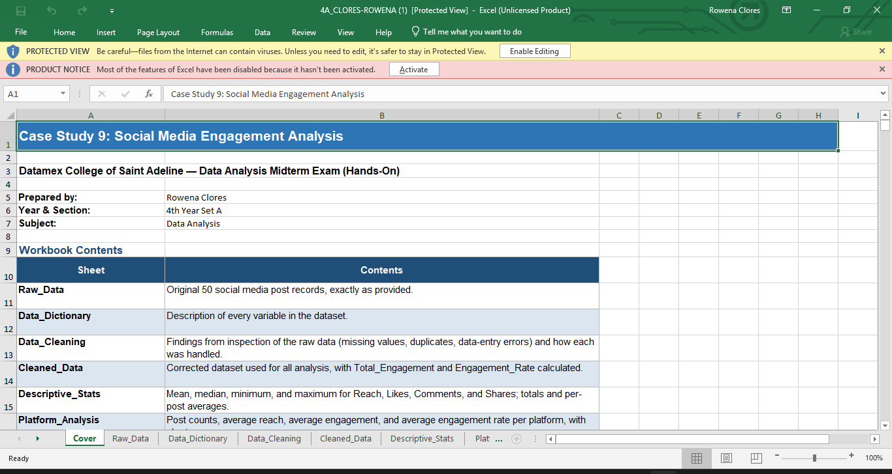

Poultry Feed Stock Tracking with POS Application
Automate inventory management and sales transactions, improve the accuracy of stock records, and enhance the efficiency of operations in poultry feed businesses.
View details
BSIT student specializing in Web Development and Data Analysis. I build reliable, well-organized technology that is simple to use.
Connect

Discover
I'm Rowena Clores, a BSIT student specializing in Web Development and Data Analysis. I am passionate about creating efficient and user-friendly web applications and extracting meaningful insights from data.
My goal is to become a IT Project Manager that can lead teams in developing innovative web solutions.
Expertise
The languages I use to build websites and applications.
The tools that help me work faster and stay organized.
Support skills that round out my IT knowledge.
Portfolio
Automate inventory management and sales transactions, improve the accuracy of stock records, and enhance the efficiency of operations in poultry feed businesses.
View details
An Excel case study that analyzes 50 social media posts to show which platforms and content types earn the most engagement.
View detailsA web-based application for managing and analyzing personal or business expenses.
View detailsMy process
IT troubleshooting cases: what broke, how I found the cause, and what I learned.
Cybersecurity incidents: what happened, how I responded, and what I learned.
Troubleshooting and Cybersecurity log · Rowena Clores
Click any file to open it
A laptop shows “Connected, no internet” or cannot join the Wi-Fi network at all, while other devices in the same place work normally.
ipconfig /all and check for a valid IP. An address starting with 169.254 means no DHCP lease was received.ping 192.168.1.1). If it replies, the local link is fine.ping 8.8.8.8). If it replies, the internet works.ping google.com). If the IP works but the name fails, the cause is DNS.ipconfig /release, ipconfig /renew and ipconfig /flushdns.Troubleshoot in layers: device, local network, internet, then DNS. The ping results tell exactly which layer is broken, so I do not waste time changing settings at random.
A computer takes several minutes to boot, programs freeze, and the whole system lags even when only a browser is open.
sfc /scannow to check system files and check the drive health status.Measure before fixing. Task Manager shows the real bottleneck, so I fix that one resource instead of reinstalling the whole system. Regular cleanup also prevents the problem from coming back.
While developing a Kotlin Android app, Android Studio reports “Gradle sync failed” or the build stops with errors, and the app cannot run.
build.gradle file./gradlew build --stacktrace in the terminal for more detail.build.gradle and see whether the error disappears.Read the first error and change one thing at a time. Committing working code to Git before upgrading versions lets me roll back quickly when an upgrade breaks the build.
A web page works on my computer, but after uploading it online the photos show as broken icons, or the page appears without its styling.
Hero.jpg vs hero.jpg).jpg vs .jpeg)link or script tagWindows ignores letter case in file names, but most web servers do not. I now use consistent lowercase file names and always check the Network tab first, since it names the exact problem.
An Android app that sends records to a Discord channel through a webhook runs without crashing, but no message ever appears in Discord.
INTERNET permission in AndroidManifest.xmlcurl. If the message appears, the webhook is fine and the bug is in the app.NetworkOnMainThreadException or SecurityException.<uses-permission android:name="android.permission.INTERNET" /> to the manifest.Dispatchers.IO and wrap it in try/catch with logging.Never let network errors fail silently: logging the response code turns a mystery into a one-line answer. Also, a webhook URL works like a password, so it should not be shared publicly or committed to GitHub.
SQL injection happens when user input is placed directly into a database query as part of the SQL command itself, instead of being treated only as data. Because the input can change the structure of the query, an attacker can alter what the database is asked to do. A login form that builds its query by joining the typed username and password into a text string is a common example.
An attacker may bypass a login, read records they should not see, change or delete data, or expose personal information. In some server setups, the damage can extend beyond the database. Because the flaw sits in a common feature like login or search, a single weakness can affect every user of the application.
SELECT * FROM users WHERE username = ?, with the input passed separately.SQL injection is prevented by separating code from data. Input validation helps, but parameterized queries remove the entire class of bug, so they should be the default. Security works best in layers: safe code, least privilege, careful error handling and regular review.
Ready for work
I explain ideas by starting with the problem, using plain language and examples, checking that my audience understands, and confirming decisions in writing.
Preview answerGroup project: Poultry Feed Stock Tracking with POS Application, built with my team to manage inventory and sales for poultry feed businesses.
Preview answerExample of meeting a deadline.
Preview answerSummary of your mock IT job interview and feedback received.
Watch videoBackground
Bachelor of Science in Information Technology
Datamex College of Saint Adeline, 2026 – 2027
Add two or three key skills or achievements.
Download resumeRecognition
Responsible AI use
Get in touch
Looking back
Before entering BSIT, I thought IT mostly meant fixing computers and making websites. My experience was limited to Microsoft Word, Excel and PowerPoint, which I used for school work and administrative tasks. I did not realize how much planning, organization and problem-solving sit behind every app people use.
The most important thing I learned is that technology matters only when it solves a real problem. My projects started with a need, such as a poultry feed business struggling with manual stock records, or people who could not track their spending. The code came after that. I also learned that careful work matters as much as technical skill. In my data analysis project, a few entry errors could have changed my conclusions if I had not checked for them.
The project that taught me the most was the Poultry Feed Stock Tracking with POS Application. It had real users in mind: owners, managers, inventory clerks and cashiers. I had to think about login roles, product search, validation and sales reports all at once. It taught me that a system is a set of connected parts, and that a sale affects stock levels. It also taught me to be honest about limitations and future improvements.
The hardest difficulty involved data and unfamiliar tools. In my Social Media Engagement Analysis, I found text and image posts with video lengths above zero, and most videos had no recorded length. I had to decide what to correct and what I could not conclude. In my app projects, learning Kotlin, Android Studio and Room Database while building meant many moments when nothing would run. I learned to read errors carefully and test one change at a time.
My skills have changed a lot. I started with basic office software. Now I can build web pages, write JavaScript and Python, use SQL, build Android apps, work with Git and GitHub, and analyze data in Excel. More importantly, I break problems into steps, test my assumptions and explain results in plain language.
I still need to improve in backend development, database design and security, because I depended on tools and guidance more than I would like. I also want to improve my testing habits, my clean coding, and my confidence presenting technical ideas to non-technical people.
I want to become an IT Project Manager with a strong foundation in web development and data analysis. Good managers understand the work their teams do, so I want to keep building and analyzing before I lead. I want to connect technical teams with the people they serve and keep projects organized and honest about progress.
I am ready to begin my career because I have already done the work the field requires. I have built real projects, handled messy data, documented my work and finished what I started. I may not have every answer, but I know how to find them, keep learning and work with others. I am not finished growing, and I am ready to begin.
Good communication means the other person understands the idea the first time, whether they are a teammate, a client or an interviewer. This is how I explain ideas clearly.
For my Poultry Feed Stock Tracking with POS project, I would explain it to an owner like this: “Poultry feed shops track stock by hand, which causes mistakes. This app updates the stock automatically with every sale, so you always know what is left.”
In my mock IT job interview, I explained my projects, skills and career goals out loud. I also document my work, such as my case files and project pages, so other people can follow my reasoning.
Poultry Feed Stock Tracking with POS Application. A team project that automates inventory management and sales transactions, improves the accuracy of stock records, and makes poultry feed businesses more efficient.
[Add your role in the team here]
A system is a set of connected parts. A team succeeds when each part fits the others, so clear communication matters as much as technical skill.
View project detailsMeeting a deadline is about planning early and avoiding wasted time. This is how I do it.
I completed three projects: Poultry Feed Stock Tracking with POS, Social Media Engagement Analysis, and an Expense Tracking Application. Each one needed planning, testing and documentation, so I worked in stages to finish them.
Measuring and planning before fixing saves more time than rushing. Small steps and regular checks keep a project on schedule.